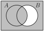

Section 1.2 Sets
Sets are the next building block of mathematics. Just as we did with propositions, this section defines basic terms and explores how we can combine these objects to build new ones.
Subsection Basic terminology
Definition 1.2.1. Sets.
A set is an unordered collection of objects called elements or members of the set.
If \(A\) is a set and \(a\) is an element of \(A\text{,}\) we write \(a \in A\text{.}\) If \(b\) isn't an element of \(A\text{,}\) we write \(b \not\in A\text{.}\)
Example 1.2.2.
Below are examples of ways of writing sets:
- Roster
\(A = \{\)list, out, the, elements, in, a, comma, separated, list\(, \dots\}\) For example: \(A = \{2, 4, 6, 8, 10, \dots\}.\)
- Set-builder
\(B=\{\)variable \(\mid\) condition for variable to be in the set\(\}\) For example, \(B = \{x \mid x \gt 0 \and x \text{ is an even integer}\}\)
Definition 1.2.3. Special Sets of Numbers.
Here are some special sets we will visit often throughout the course and the rest of your mathematical career:
- Empty set
\(\emptyset = \{\}\) is the set consisting of no elements.
- Natural Numbers
\(\mathbb{N} = \{0, 1, 2, 3, 4, \dots \}\text{,}\) the set of counting numbers and zero.
- Integers
\(\mathbb{Z} = \{\dots, -3, -2, -1, 0, 1, 2, 3, \dots \}\) includes all negative, zero, and positive counting numbers
- Positive Integers
\(\mathbb{Z}^+ = \{1, 2, 3, \dots \}\) contains only the positive counting numbers.
- Rational Numbers
-
\begin{align*} \mathbb{Q} \amp= \left\{ \frac{p}{q} \mid p \in \mathbb{Z}, q \in \mathbb{Z}, \text{ and } q \not= 0 \right\}\\ \amp=\left\{0,1,-1,2,\frac{1}{2},-\frac{1}{2},-2,3,\frac{1}{3},-\frac{1}{3},-3,\frac{3}{2},\ldots\right\} \end{align*}
is the set of all fractions.
- Real Numbers
\(\mathbb{R} \) is the set of all real numbers. In Calculus, we wrote the interval \((-\infty, \infty)\text{.}\) This includes all fractions and those irrational numbers that can't be written as fractions.
Note 1.2.4.
When using set-builder notation, we can think about it this way: \(\{\text{elements look like this} \mid \text{qualifications for membership}\}\)
Here are several examples showing a variety of ways of writing sets:
\(\{x \mid |2x+1| \le 10 \and x \in \Z\}\) tells us our elements are going to be whatever \(x\) satisfy the expression \(|2x+1| \le 10\) where our variables are integers. This will be exactly \(\{-5, -4, -3, -2, -1, 0, 1, 2, 3, 4\}\)
\(\{a \in \N \mid \frac{a}{2} \ge 4 \}\) means that the elements will be natural numbers (this is the first part, \(a \in \N\)), and the qualification to be in the set is that \(a/2 \ge 4\text{.}\) Note that same letter \(a\text{!.}\) A little algebra says \(a\ge 8\) is the requirement to be a member, and since the elements are those same \(a\) numbers, our set is \(\{8, 9, 10, 11, 12, \dots\}\)
\(\{\frac{a}{2} \in \Q \mid a \in \N\}\) means the elements will be rational numbers of the form \(\frac{a}{2}\) (this is the first part, \(\frac{a}{2} \in \Q\)). Since the qualification is just that the \(a\) is a natural number, that tells us to feed all natural numbers into our set, so we have \(\{0, \frac12, 1, \frac32, 2, \frac52, \dots\}\)
-
We have also seen intervals of real numbers in our previous courses which are the sets:
\((a,b) = \{x \mid a \lt x \lt b, x\in \R \}\) \([a,b) = \{x \mid a \le x \lt b, x\in \R \}\)
\((a,b] = \{x \mid a \lt x \le b, x\in \R \}\) \([a,b] = \{x \mid a \le x \le b, x\in \R \}\)
Definition 1.2.5. Set Relations.
We say that two sets, \(A\) and \(B\) are equal, an write \(A = B\) they have exactly the same elements.
We say that \(A\) is a subset of \(B\text{,}\) and write \(A \subseteq B\) if every element of \(A\) is an element of \(B\text{.}\)
If there is an element of \(B\) which is not also in \(A\text{,}\) we say that \(A\) is a proper subset of \(B\) and write \(A \subset B\text{.}\)
Video / Answer.Example 1.2.6.
Consider the set \(S = \{1, 2, 3, 4, 5\}\text{,}\) then:
\(3 \in S\text{,}\) since 3 is an element of \(S\)
\(\{3\}\subseteq S\text{,}\) because the set consisting of 3, \(\{3\}\text{,}\) is a subset of \(S\text{.}\)
We can also write, \(\{3\}\subset S\text{,}\) because although the set \(\{3\}\) is a subset of \(S\text{,}\) they're unequal: \(\{3\} \ne S\text{,}\) so it's a proper subset.
This is meaningless: \(3 \subseteq S\) since 3 a number, not a set, so it can't be a subset of \(S\)
Order in sets doesn't matter, so \(\{3,1,5,4,2\} = S\text{.}\)
The following theorem tells us that every set contains itself and also the empty set. That every set is a subset of itself maybe feels obvious, but the other half, that the empty set is a subset of every set, is a little less obvious. We will formally prove both statements are true in Example 2.2.2 after we develop the tools of logical proof.
Theorem 1.2.7.
For every set \(S\text{,}\)
\(\emptyset \subseteq S\) and
\(S \subseteq S\text{.}\)
Note 1.2.8.
Since a set is always a subset of itself we can say that if two sets, \(A\) and \(B\) are equal, then \(A\) is a subset of \(B\) and vice versa.
Definition 1.2.9. Power Set.
Given any set \(S\text{,}\) the power set of \(S\) is the set of all subsets of the set \(S\text{.}\) We denote the power set of \(S\) by \(\pow(S)\)
Example 1.2.10.
Find the power set of:
\(\displaystyle \{a, b, c\}\)
\(\displaystyle \{1, 2\}\)
\(\displaystyle \emptyset\)
Definition 1.2.11. Cardinality.
Let \(S\) be a set. If there are exactly \(n\) distinct elements in \(S\) where \(n\) is a non-negative integer, then we say that \(S\) is a finite set with cardinality of \(n\text{,}\) and write \(|S|=n\text{.}\)
A set is said to be infinite if it is not finite.
Example 1.2.12.
Find the cardinality:
\(\displaystyle |\{a, b, c\}|\)
\(\displaystyle |\pow(\{a, b, c \})|\)
\(\displaystyle |\emptyset|\)
Subsection Operations on sets
Definition 1.2.13.
We define an ordered \(n-\)tuple to be an ordered collection of the form \((a_1, a_2, \dots, a_n)\text{.}\)
We call the \(2-\)tuple \((a_1, a_2)\) an ordered pair, and the \(3-\)tuple \((a_1, a_2, a_3)\) an ordered triple.
Ordered pairs will be familiar from algebra and calculus when you plotted points on the Cartesian plane. \((x, y)\) meant that the \(x\) came from one set (corresponding to the horizontal axis), and \(y\) came from another set (corresponding to the vertical axis).
Definition 1.2.14. Cartesian Product.
Let \(A\) and \(B\) be sets. The Cartesian Product of \(A\) and \(B\text{,}\) denoted by \(A\times B\text{,}\) is the set of all ordered pairs \((a,b)\) where \(a\in A\) and \(b \in B\text{.}\) That is,
We also denote the Cartesian product of a set with itself by the superscript \(A^2 = A \times A\text{.}\)
Returning to our calculus experience, for the ordered pair \((x,y)\text{,}\) our \(x\) and \(y\) variables all came from the set of real numbers, so we'd formally say that the point \((x,y)\) is an element in the set \(\R \times \R\) or \(\R^2\text{,}\) that is, \((x,y) \in \R^2\text{.}\) If you've had calc 3, the points \((x,y,z) \in \R^3\text{,}\) live in three-dimensional space. Let's take a look at discrete examples.
Example 1.2.15.
Let \(A=\{1, 2\}\) and \(B = \{x, y , z\}\text{,}\) find:
\(\displaystyle |A|\)
\(\displaystyle |B|\)
How many elements do you expect in \(A \times B\text{?}\)
\(\displaystyle A \times B\)
\(\displaystyle B \times A\)
\(\displaystyle A^2\)
Definition 1.2.16. Set Operations.
If \(A\) and \(B\) are two sets, we define the union of \(A\) and \(B\text{,}\) denoted \(A \cup B\text{,}\) to be the set of all elements that are in \(A\) or \(B\text{,}\) or both.
As a Venn diagram:

If \(A\) and \(B\) are two sets, we define the intersection of \(A\) and \(B\text{,}\) denoted \(A \cap B\text{,}\) to be the set of only elements that are in both \(A\) and \(B\text{.}\)
As a Venn diagram:
If \(A\) and \(B\) are two sets, we define the difference of \(A\) and \(B\text{,}\) denoted \(A \setminus B\text{,}\) to be the set of only elements that are only in \(A\) and not in \(B\text{.}\)
As a Venn diagram:

Let \(U\) be the universal set, that is the set of all possible objects in consideration.

If \(A\) is a set, the complement of \(A\text{,}\) denoted \(\overline{A}\text{,}\) is the set difference \(\overline{A} = U \setminus A\text{.}\)
Example 1.2.17.
Let \(A=\{a,b,c,d,e\}\) and \(B=\{a, b,c,d,e,f,g,h\}\text{,}\) find
\(\displaystyle |A|\)
\(\displaystyle |B|\)
\(\displaystyle A\cup B\)
\(\displaystyle A\cap B\)
\(\displaystyle |A\cup B|\)
\(\displaystyle |A\cap B|\)
\(\displaystyle A\setminus B\)
\(\displaystyle B\setminus A\)
What do you observe about some combination of the cardinalities above? Be on the lookout for patterns as you work through more cardinality questions. We'll find formulas in the future for things such as \(|A \cup B|\text{,}\) \(\mathcal{P}(A)\text{,}\) and \(|A \times B|\)
Subsection Verifying Set Identities
An identity is a statement which is true if we replace the variables with specific sets. One way that we can show that an identity is true by shading a Venn Diagram for each side of the equality.
Example 1.2.18.
Verify the following identities by using a Venn Diagram.
\(\displaystyle \overline{A \cap B} = \overline{A} \cup \overline{B}\)
\(\displaystyle A \cup(B \cap C) = (A \cup B) \cap (A \cup C)\)
Let \(A, B\) and \(C\) be three sets and let \(U\) be the universal set.
- Commutative Laws
\(A \cup B = B \cup A\)
\(A \cap B = B \cap A\)- Associative Laws
\((A \cup B) \cup C = A \cup (B \cup C)\)
\((A \cap B) \cap C = A \cap (B \cap C)\)- Distributive Laws
\(A \cap (B \cup C) = (A \cap B) \cup (A \cap C) \) \(A \cup (B \cap C) = (A \cup B) \cap (A \cup C) \)
- Identity Laws
\(A \cup \emptyset = A\) \(A \cap U = A\)
- Negation Laws
\(A \cap \overline{A} = \emptyset\)
\(A \cup \overline{A} = U\)- Idempotent Laws
\(A \cup A = A\)
\(A \cap A = A\)- Domination Laws
\(A \cap \emptyset = \emptyset\)
\(A \cup U = U\)- Absorption Laws
\(A \cap (A \cup B)= A\)
\(A \cup (A \cap B)= A\)- DeMorgan's Laws
\(\overline{(A\cup B)} = \overline{A}\cap \overline{B}\)
\(\overline{(A\cap B)} = \overline{A}\cup \overline{B}\)- Double Negation Law
\(\displaystyle \overline{\overline{A}} = A\)
It would be good practice to take a moment and confirm for yourself that these identities are true by shading a Venn diagram for each side of the equalities.
Exercises Exercises
1.
What kind of object is each of the following? Is it a set, a number, or a logical proposition? If it's a set, give its elements. If it's a number, give the number. If it's proposition, give its truth value.
Let \(A = \{1, 2, 3, 4\}\text{,}\) \(B = \{2, 4\}\text{,}\) and \(C = \{5\}\)
\(\displaystyle A \cap B\)
\(\displaystyle B \subset A\)
\(\displaystyle A \subset B\)
\(\displaystyle |A \cup B|\)
\(\displaystyle A \cap C\)
\(\displaystyle 3 \in B\)
This is a set; \(A \cap B= \{2, 4\}\)
This is a statement. It is true.
This is also a statement. It is false, since \(1 \in A\) but \(1\not\in B\)
This is a number. It's 4.
This is a set. It's \(\emptyset\text{.}\)
This is statement. It's false.
2.
Let \(A = \{1, 2, 3, 4, 5, 6\}\text{,}\) \(B = \{2, 4, 6\}\text{,}\) \(C = \{1, 2, 3\}\) and \(D = \{7, 8, 9\}\text{.}\) Determine which of the following are true, false, or meaningless.
\(A \subset B\text{.}\)
\(B \subset A\text{.}\)
\(B \in C\text{.}\)
\(\emptyset \in A\text{.}\)
\(\emptyset \subset A\text{.}\)
\(A \lt D\text{.}\)
\(3 \in C\text{.}\)
\(3 \subset C\text{.}\)
\(\{3\} \subset C\text{.}\)
False. For example, \(1\in A\) but \(1 \notin B\text{.}\)
True. Every element in \(B\) is an element in \(A\text{.}\)
False. The elements in \(C\) are 1, 2, and 3. The set \(B\) is not equal to 1, 2, or 3.
False. \(A\) has exactly 6 elements, and none of them are the empty set.
True. Everything in the empty set (nothing) is also an element of \(A\text{.}\) Notice that the empty set is a subset of every set.
Meaningless. A set cannot be less than another set.
True. \(3\) is one of the elements of the set \(C\text{.}\)
Meaningless. \(3\) is not a set, so it cannot be a subset of another set.
True. \(3\) is the only element of the set \(\{3\}\text{,}\) and is an element of \(C\text{,}\) so every element in \(\{3\}\) is an element of \(C\text{.}\)
3.
Let \(A = \{1, 2, 3, 4, 5, 6\}\text{,}\) \(B = \{2, 4, 6\}\text{,}\) \(C = \{1, 2, 3\}\) and \(D = \{7, 8, 9\}\text{.}\) If the universe is \(U = \{1, 2, \ldots, 10\}\text{,}\) find:
\(A \cup B\text{.}\)
\(A \cap B\text{.}\)
\(B \cap C\text{.}\)
\(A \cap D\text{.}\)
\(\bar{B \cup C}\text{.}\)
\(A \setminus B\text{.}\)
\((D \cap \bar C) \cup \bar{A \cap B}\text{.}\)
\(\emptyset \cup C\text{.}\)
\(\emptyset \cap C\text{.}\)
\(A \cup B = \{1, 2, 3, 4, 5, 6\} = A\) since everything in \(B\) is already in \(A\text{.}\)
\(A \cap B = \{2, 4, 6\} = B\) since everything in \(B\) is in \(A\text{.}\)
\(B \cap C = \{2\}\) as the only element of both \(B\) and \(C\) is 2.
\(A \cap D = \emptyset\) since \(A\) and \(D\) have no common elements.
\(\bar{B \cup C} = \{5, 7, 8, 9, 10\}\text{.}\) First we find that \(B \cup C = \{1, 2, 3, 4, 6\}\text{,}\) then we take everything not in that set.
\(A \setminus B = \{1, 3, 5\}\) since the elements 1, 3, and 5 are in \(A\) but not in \(B\text{.}\) This is the same as \(A \cap \bar B\text{.}\)
\((D \cap \bar C) \cup \bar{A \cap B} = \{1, 3, 5, 7, 8, 9, 10\}.\) The set contains all elements that are either in \(D\) but not in \(C\) (i.e., \(\{7,8,9\}\)), or not in both \(A\) and \(B\) (i.e., \(\{1,3,5,7,8,9,10\}\)).
\(\emptyset \cup C = C\) since nothing is added by the empty set.
\(\emptyset \cap C = \emptyset\) since nothing can be both in a set and in the empty set.
4.
Let \(A = \{1,2,3,4,5\}\text{,}\) \(B = \{3,4,5,6,7\}\text{,}\) and \(C = \{2,3,5\}\text{.}\)
Find \(A \cap B\text{.}\)
Find \(A \cup B\text{.}\)
Find \(A \setminus B\text{.}\)
Find \(A \cap \overline{(B \cup C)}\text{.}\)
Find \(A \times C\text{.}\)
Is \(C \subseteq A\text{?}\) Explain.
Is \(C \subseteq B\text{?}\) Explain.
\(A \cap B = \{3,4,5\}\text{.}\)
\(A \cup B = \{1,2,3,4,5,6,7\}\text{.}\)
\(A \setminus B = \{1,2\}\text{.}\)
\(A \cap \bar{(B \cup C)} = \{1\}\text{.}\)
- \begin{align*} A \times C = \{ \amp(1,2), (1,3), (1,5), (2,2), (2,3), (2,5), (3,2), (3,3), \\ \amp(3,5), (4,2),(4,3), (4,5), (5,2), (5,3), (5,5)\} \end{align*}
Yes. All three elements of \(C\) are also elements of \(A\text{.}\)
No. There is an element of \(C\text{,}\) namely the element 2, which is not an element of \(B\text{.}\)
5.
Let \(A = \{x \in \N \st 3 \le x \le 13\}\text{,}\) \(B = \{x \in \N \st x \mbox{ is even} \}\text{,}\) and \({C = \{x \in \N \st x \mbox{ is odd} \}}\text{.}\)
Find \(A \cap B\text{.}\)
Find \(A \cup B\text{.}\)
Find \(B \cap C\text{.}\)
Find \(B \cup C\text{.}\)
\(\displaystyle A\cap B = \{4, 6, 8, 10, 12\}\)
\(\displaystyle A\cup B = \{0, 2, 3, 4, 5, \dots 12, 13, 14, 16, 18, 20, 22, 24, \dots\}\)
\(\displaystyle B\cap C = \emptyset \)
\(\displaystyle B\cup C = \N \)
6.
Find an example of sets \(A\) and \(B\) such that \(A\cap B = \{3, 5\}\) and \(A \cup B = \{2, 3, 5, 7, 8\}\text{.}\)
There are many possible examples. Here is a simple one. Let \(A=\{3, 5\}\) and \(B=\{2, 3, 5, 7, 8\}\)
7.
Find an example of sets \(A\) and \(B\) such that \(A \subseteq B\) and \(A \in B\text{.}\)
For example, \(A = \{1,2,3\}\) and \(B = \{1,2,3,4,5,\{1,2,3\}\}\)
8.
Draw a Venn diagram to represent each of the following:
\(\displaystyle A \cup \bar B\)
\(\displaystyle \bar{(A \cup B)}\)
\(\displaystyle A \cap (B \cup C)\)
\(\displaystyle (A \cap B) \cup C\)
\(\displaystyle \bar A \cap B \cap \bar C\)
\(\displaystyle (A \cup B) \setminus C\)
-
\(A \cup \bar B\text{:}\)
 -
\(\bar{(A \cup B)}\text{:}\)

-
\(A \cap (B \cup C)\text{:}\)
-
\((A \cap B) \cup C\text{:}\)

-
\(\bar A \cap B \cap \bar C\text{:}\)

-
\((A \cup B) \setminus C\text{:}\)
9.
Describe a set in terms of \(A\) and \(B\) (using set notation) which has the following Venn diagram:

One way to answer is \((A\cup B) \setminus (A\cap B)\)
10.
Find the following cardinalities:
\(|A|\) when \(A = \{4,5,6,\ldots,37\}\)
\(|A|\) when \(A = \{x \in \Z \st -2 \le x \le 100\}\)
\(|A \cap B|\) when \(A = \{x \in \N \st x \le 20\}\) and \(B = \{x \in \N \st x \mbox{ is prime} \}\text{;}\) note that 1 isn't prime.
34.
103.
8.
11.
Let \(A = \{a, b, c, d\}\text{.}\) Find \(\pow(A)\text{.}\)
12.
Let \(A = \{1,2,3,4,5,6\}\text{.}\) Find all sets \(B \in \pow(A)\) which have the property \(\{2,3,5\} \subseteq B\text{.}\)
There are eight possible sets. \(B\) can be any of \(\{2,3,5\}\text{,}\) \(\{1,2,3,5\}\text{,}\) \(\{2,3,4, 5\}\text{,}\) \(\{2,3,5,6\}\text{,}\) \(\{1,2,3,4,5\}\text{,}\) \(\{1,2,3,5,6\}\text{,}\) \(\{2,3, 4, 5, 6\}\text{,}\) \(\and \{1, 2, 3, 4, 5, 6\}\)
13.
Find an example of sets \(A\) and \(B\) such that \(|A| = 4\text{,}\) \(|B| = 5\text{,}\) and \(|A \cup B| = 9\text{.}\)
For example, \(A = \{1,2,3,4\}\) and \(B = \{5,6,7,8,9\}\) gives \(A \cup B = \{1,2,3,4,5,6,7,8,9\}\text{.}\)
14.
Let \(A = \{1,2,\ldots, 10\}\text{.}\) How many subsets of \(A\) contain exactly one element (i.e., how many singleton subsets are there)? How many doubleton subsets (containing exactly two elements) are there?
There are 10 subsets that consist of a single element. For subsets consisting of exactly two elements, there are 45
15.
Find an example of sets \(A\) and \(B\) such that \(|A| = 3\text{,}\) \(|B| = 4\text{,}\) and \(|A \cup B| = 5\text{.}\)
There are many examples. Here's one possibility: \(A = \{ a, b, c\}, B=\{b,c,d,e\}\text{.}\) Then the union is \(A \cup B = \{a, b, c, d, e\}\text{.}\)
16.
Are there sets \(A\) and \(B\) such that \(|A| = |B|\text{,}\) \(|A\cup B| = 10\text{,}\) and \(|A\cap B| = 5\text{?}\) Explain.
17.
In a regular deck of playing cards there are 26 red cards and 12 face cards. Explain, using sets and what you have learned about cardinalities, why there are only 32 cards which are either red or a face card.
The intersection of the set of red cards and the set of face cards is nonempty. It includes six cards: Jack of Hearts, Queen of Hearts, King of Hearts, Jack of Diamonds, Queen of Diamonds, and King of Diamonds.
18.
Recall \(\Z = \{\ldots,-2,-1,0, 1,2,\ldots\}\) (the integers). Let \(\Z^+ = \{1, 2, 3, \ldots\}\) be the positive integers. Let \(2\Z\) be the even integers, \(3\Z\) be the multiples of 3, and so on.
Is \(\Z^+ \subseteq 2\Z\text{?}\) Explain.
Is \(2\Z \subseteq \Z^+\text{?}\) Explain.
Find \(2\Z \cap 3\Z\text{.}\) Describe the set in words, and using set notation.
No, since the set on the right contains only multiples of \(2\text{,}\) but the set on the left contains, for example, \(3\text{.}\)
No. Because this time, we have \(-2 \in 2\Z\text{,}\) but \(-2\not\in \Z^+\)
\(2\Z \cap 3\Z\) is the set of all integers which are multiples of both 2 and 3 (these are the multiples of 6). Therefore \(2\Z \cap 3\Z = \{6x \st x \in \Z )\}\text{.}\)
Subsection Forum Posts about this section
Strongbad Grammar Lesson Video